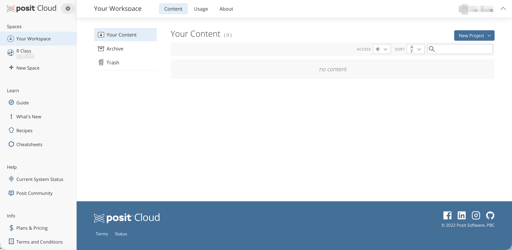

Topic 2.1 - R 语言简介¶
1. R 语言的基本概念¶
R 语言是一种专门为统计建模与数据分析而设计的编程语言，和其他编程语言（如 Python）相比，R 具有以下优势：
-
R 自带丰富的统计与数据分析的功能，例如：
- 数据操作与分析
- 数据可视化
- 统计建模
-
R 对非程序员更友好，其语法通常更直观，上手简单，适合数据分析任务，但是依然保有着编程语言的特点，因此，学会 R 之后再学习其他编程语言也会更容易
-
R 拥有一个庞大且活跃的社区，不仅有大量的免费资源可已使用，而且还可以获得社区的支持和帮助
-
R 是开源且免费的，这使得它对广泛的用户群体都可访问
使用 R（或编程语言）相比于点选式软件（如 Excel 或 SPSS）的优势包括：
-
清晰记录操作步骤：
- 在 Excel 中，软件展示给我们的表格其实是结果，而不是过程。我们无法清晰地看到每一步操作是如何进行的
- 使用代码进行数据分析，每一步操作都会被记录下来，因为操作记录就是代码本身
-
避免隐性错误：
- 在 Excel 中，一个错误的单元格引用可能会悄悄地破坏整个分析，而且还不容易被发现
- 在 R 中，错误更容易被发现，也更容易修复，因为一旦代码有错，程序就会报错，提示你哪里出了问题
-
可重复和可更新：
- 在 Excel 中，如果你需要用新数据重新运行相同的分析，你可能需要手动重复每一步
- 使用代码进行数据分析，代码就是过程的记录，你只需要运行相同的代码，就可以得到新的结果
-
适合团队协作：
- 在 Excel 中，尽管也可以共享文件，但是大家对文件的修改都是基于覆盖别人数据的方式，很难追踪每个人的修改历史，也不方便多人同时编辑
- 使用基于代码的工具，版本控制系统（如 Git）可以帮助团队更好地协作，追踪每个人的修改历史，并且支持多人同时编辑同一个项目
2. 运行 R 代码的方式¶
(1) 在本地运行 R 代码¶
在本地运行 R 需要在自己的电脑上下载两个软件：
-
R：核心编程语言和环境：
- 计算机是只能运行机器码的（0 或 1 的二进制指令），默认的设置中，计算机是看不懂 R 代码的
- 那么这个 R 软件的功能就是将你编写的 R 代码翻译成计算机可以执行的机器码
- 它就像一本字典，帮助你的计算机理解你在 R 中给出的指令
-
RStudio：一个集成开发环境（IDE），提供了一个用户友好的界面来编写和运行 R 代码
- 我们把 R 软件比作是一个字典，但是仅仅有一本 R 字典是不够的
- 你还需要一个软件，提供一个良好的工作空间来编写和运行你的 R 代码，也就是说你还需要一个软件来指导你如何使用这本字典
- 这个软件就是 RStudio，它是最受欢迎的 R IDE 之一

这两个软件都是免费的，它们的下载连接如下：
- R: https://cran.r-project.org/mirrors.html
- RStudio: https://posit.co/download/rstudio-desktop/
安装完 R 和 RStudio 后，你可以打开 RStudio 并查看其界面：

-
注意：R 软件下载下来后可能永远不需要打开，因为 RStudio 会自动调用 R 来运行你的代码，但是千万不能因为 R 软件不需要打开，就不安装 R 软件，或者把它卸载掉了，否则 RStudio 就无法运行你的 R 代码了
-
然后，你可以点击 "New File" > "R Script" 来创建一个新的 R 脚本文件，在这里你可以编写和运行你的 R 代码：

-
然后，这个界面就显示了完整的 RStudio 界面，其中有四个主要面板：
- 左上角：Source 面板：你在这里编写 R 代码
- 左下角：Console 面板：你可以在这里直接输入和运行 R 命令
- 右上角：Environment/History 面板：你可以在这里查看你创建的变量和数据框，以及你的命令历史
- 右下角：Files/Plots/Packages/Help 面板：你可以在这里管理文件、查看图表、管理包以及访问帮助文档
(2) 运行 R 代码的其他方式¶
Posit Cloud 是一个基于云的 RStudio 服务，允许你在云端编写和运行 R 代码：
- Posit Cloud 提供了一个在线的 RStudio 环境，你可以通过浏览器访问
- Posit Cloud 的官方网站是 https://posit.cloud/
要使用 Posit Cloud，你需要创建一个账户并登录，然后你可以看到以下界面：

Posit Cloud 为你提供了工作区，用于创建和管理你的 R 项目：
- 在 "Your Workspaces" 标签下，你可以看到你创建的 R 项目
- 你也可以点击 "New Workspace" 来创建一个新的工作区，在新的工作区来创建属于这个工作区的 R 项目
在每个工作区中，你可以通过点击 "New Project" > "New RStudio Project" 来创建 R 项目：
- 然后，你可以看到一个在线的 RStudio 界面，这个界面与本地计算机上的 RStudio 界面相同
- 你可以以与本地 RStudio 界面相同的方式编写和运行你的 R 代码
(3) 对比本地运行和云端运行 R 代码¶
本地运行 R 代码：
- 需要在自己的电脑上安装 R 和 RStudio，并定期更新到最新版本
- 可以在不联网的情况下运行 R 代码
- 使用自己本地的计算资源（CPU、内存）
- 文件和项目存储在你的本地电脑上，没有办法从不同设备访问
在 Posit Cloud 上运行 R 代码：
- 不需要安装任何软件，并且云端会自动更新 R 和 RStudio 到最新版本，你不需要担心软件的安装和更新问题
- 必须联网才能使用 Posit Cloud 来运行 R 代码
- 计算资源由云服务器提供，通常要比本地资源弱一些，但是对于小型数据分析任务来说是足够的
- 文件和项目存储在云端，可以从不同设备访问，而无需担心文件管理